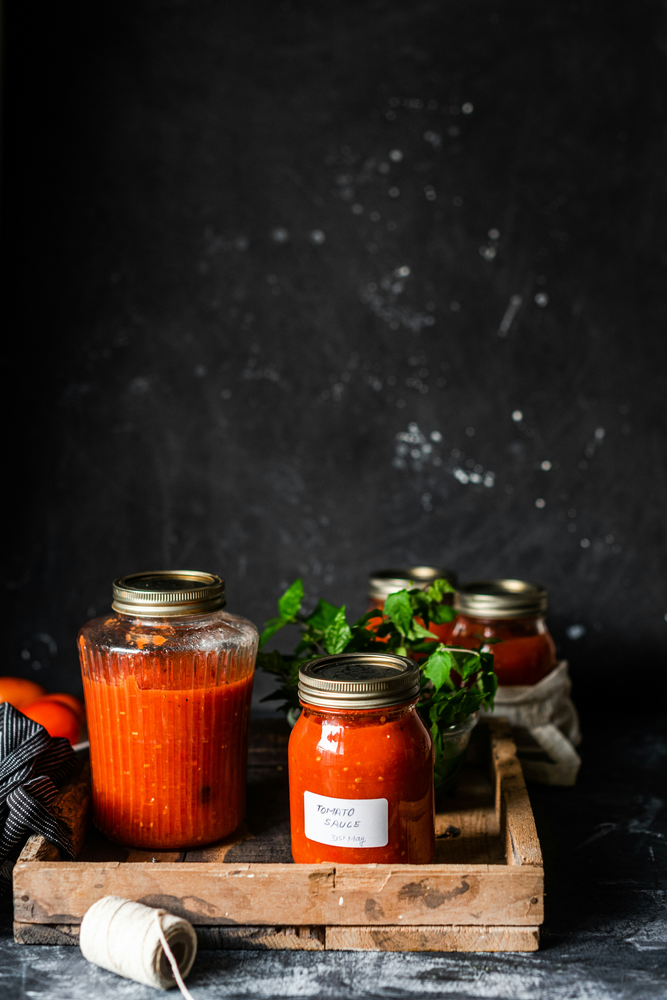

Return to Homepage
Tomato Basil Sauce

Description
This summery tomato sauce is perfect to keep in your fridge for a super easy weeknight pasta or pizza sauce. The scent of basil filling your home is a plus, too!
Ingredients
- 6 Medium Roma Tomatoes
- 2 Better Boy Tomatoes (or regular grocery store variety)
- 1 Head of Garlic, peeled
- 1 Tbsp of Olive Oil
- Small bunch of Basil, a few large leaves chopped and kept aside
- Salt, to taste
Steps
- Preheat oven to 350 degrees.
- Score tomatoes with an "X" shape on the end opposite the stem.
- Arrange on a casserole dish with the "X"s facing upward. Distribute the garlic cloves and basil leaves around the tomatoes.
- Roast at 350 degrees for 30 minutes or until softened.
- Turn on the broiler for 5 minutes, until tomatoes darken on top and the skin begins to curl.
- Let cool until tomatoes can be handled. Using tongs or fingers, pull back the tomato skins from where they lifted at the X. Discard skins.
- Crush garlic cloves and discard any tough ends.
- Add skinned tomatoes, crushed garlic, and cooked basil into a pot. Crush the tomatoes and remove any tough pith and core. Add 2 cups water (or vegetable broth, if preferred) as well as a hefty pinch of salt and let simmer on low heat for a few hours, until the liquid reduces to your preferred consistency.
- Just before serving, sprinkle in remaining chopped basil and combine.
Note that if you're using this sauce for pizza, you'll want to take it off the heat before it thickens completely! This is because it will continue to cook when the pizza is put into the oven.